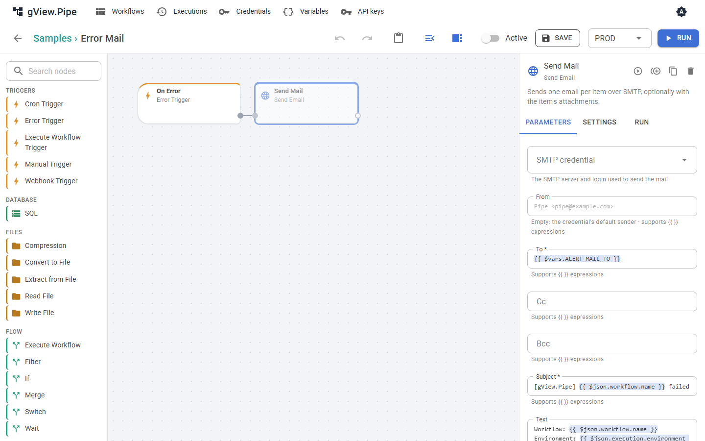

Benachrichtigung bei Fehlern¶
Wenn ein zeitgesteuerter oder per Webhook gestarteter Workflow fehlschlägt, schaut niemand in den Editor. Ein Fehler-Workflow kann stattdessen eine Nachricht schicken: eine Mail, einen Teams-Beitrag oder eine Slack-Nachricht. Die Gruppe Samples enthält für jeden Weg ein Beispiel.
| Beispiel | Schickt | Braucht |
|---|---|---|
| Error Mail | eine Mail mit Workflow, Environment, Node, Fehler und Link | ein SMTP-Credential und die Variable ALERT_MAIL_TO |
| Error Teams | eine Adaptive Card in einen Teams-Kanal | die geheime Variable ALERT_TEAMS_URL |
| Error Slack | eine Nachricht in einen Slack-Kanal | die geheime Variable ALERT_SLACK_URL |
| Error Alerts | eine Zeile im Anwendungslog | nichts |
Einrichten¶
- Öffne das Beispiel, etwa Error Mail. Sein sendender Node ist deaktiviert, damit eine frische Installation nichts verschickt.
- Lege fest, was er braucht:
- Error Mail: Wähle im Node Send Mail das SMTP-Credential und lege auf der Seite Variablen die Variable
ALERT_MAIL_TOan (eine oder mehrere Adressen, durch Kommas getrennt). Je Environment sind andere Werte möglich, zum Beispiel ein Team-Postfach fürPROD. - Error Teams: Füge in Teams dem Kanal den Workflow Post to a channel when a webhook request is received hinzu und kopiere seine URL. Lege sie als geheime Variable
ALERT_TEAMS_URLan. - Error Slack: Lege in deiner Slack-App einen Incoming Webhook an und speichere seine URL als geheime Variable
ALERT_SLACK_URL.
- Error Mail: Wähle im Node Send Mail das SMTP-Credential und lege auf der Seite Variablen die Variable
- Aktiviere den sendenden Node (auswählen, Settings, Disabled ausschalten) und speichere.
-
Wähle den Fehler-Workflow dort, wo er gelten soll:
- für einen Workflow: Error workflow in seinem Workflow-Panel;
- für eine Gruppe: Error workflow im Gruppen-Dialog (Stift auf der Gruppenkachel);
- für alle Workflows:
Pipe:ErrorWorkflowIdinpipe.config, zum Beispiel"error-mail"(Konfiguration).
Ein Workflow nutzt den ersten, der auf Workflow → Gruppe → Instanz gesetzt ist. None an einem Workflow schaltet die Benachrichtigung für ihn ab, etwa für einen Test-Workflow. 5. Bitte den Administrator,
Pipe:PublicUrlauf die Adresse zu setzen, unter der die App geöffnet wird. Dann enthalten die Nachrichten einen Link zum fehlgeschlagenen Lauf.

Kopiere ein Beispiel, statt es zu ändern, wenn du mehrere Varianten brauchst, etwa andere Empfänger je Gruppe.
Wie oft Nachrichten kommen¶
Throttle minutes am Error Trigger (Vorgabe 15) begrenzt die Nachrichten je fehlgeschlagenem Workflow: Nach einer Nachricht werden weitere Fehler desselben Workflows für diese Zeit nur gezählt. Die nächste Nachricht sagt, wie viele es waren (suppressed). Ein Workflow, der jede Minute fehlschlägt, schickt deshalb eine Nachricht pro Viertelstunde, nicht 15. Mit 0 kommt jeder Fehler.
Weiteres, das die Zahl der Nachrichten klein hält:
- Läufe, die du im Editor startest, schicken nie Nachrichten.
- Ein fehlschlagender Sub-Workflow wird einmal gemeldet, vom Workflow, der ihn aufgerufen hat; die Nachricht nennt den Sub-Workflow und seinen fehlgeschlagenen Node.
- Ein Node mit Continue oder Error output lässt den Lauf nicht fehlschlagen und wird daher nicht gemeldet. Schicke bei Bedarf eine Nachricht aus seinem
error-Zweig (Fehlerbehandlung).
Ausprobieren¶
Starte die Entwickler-Container mit Mailpit (ADD_MAILPIT im AppHost, siehe Entwicklerhandbuch) und lege ein SMTP-Credential für localhost, Port 1025, ohne TLS an. Richte damit Error Mail ein, lass einen Workflow mit Cron- oder Webhook-Trigger fehlschlagen (etwa einen Code-Node mit throw new Error('test')) und lass ihn über seinen Trigger laufen oder starte ein Replay eines fehlgeschlagenen Laufs. Die Mail erscheint unter http://localhost:8025.
Eigene schreiben¶
Jeder Workflow, der mit einem Error Trigger beginnt, ist ein Fehler-Workflow. Sein Item ist unter Fehlerbehandlung beschrieben. Nützliche Ausdrücke:
| Ausdruck | Wert |
|---|---|
{{ $json.workflow.name }} |
Name des fehlgeschlagenen Workflows |
{{ $json.execution.environment }} |
Environment des Laufs, zum Beispiel PROD |
{{ $json.node?.name ?? '-' }} |
der fehlgeschlagene Node, falls bekannt |
{{ $json.execution.error }} |
die Fehlermeldung |
{{ $json.execution.url ?? '' }} |
Link zum Lauf (mit Pipe:PublicUrl) |
{{ $json.suppressed }} |
seit der letzten Nachricht nicht gemeldete Fehler |